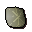
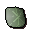
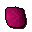
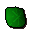
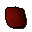
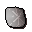

Gem rock table
Database drop table
gem_rock_table in scripts/skill_mining/configs/gem_rock_table.dbrowEntries
Drop table
| Item | Quantity | Rarity | Notes |
|---|---|---|---|
 Uncut opal | 1 | 15/32 (46.88%) | |
 Uncut jade | 1 | 15/64 (23.44%) | |
 Uncut red topaz | 1 | 15/128 (11.72%) | |
| 1 | 9/128 (7.03%) | ||
 Uncut emerald | 1 | 5/128 (3.91%) | |
 Uncut ruby | 1 | 5/128 (3.91%) | |
 Uncut diamond | 1 | 1/32 (3.12%) |